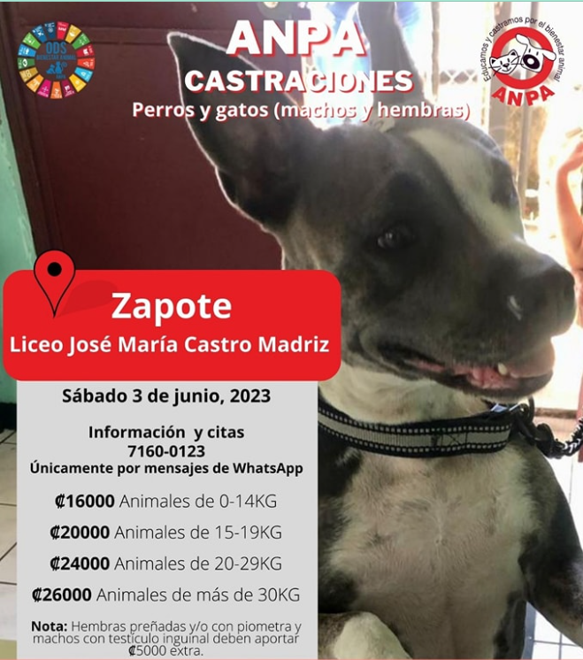

Castraciones
En esta sección, encontrarás diversa información a cerca de campañas de castración que se estarán realizando en las próximas fechas, en las respectivas imágenes encontrarás información a cerca de estas y sobre cómo y qué debes de llevar.


